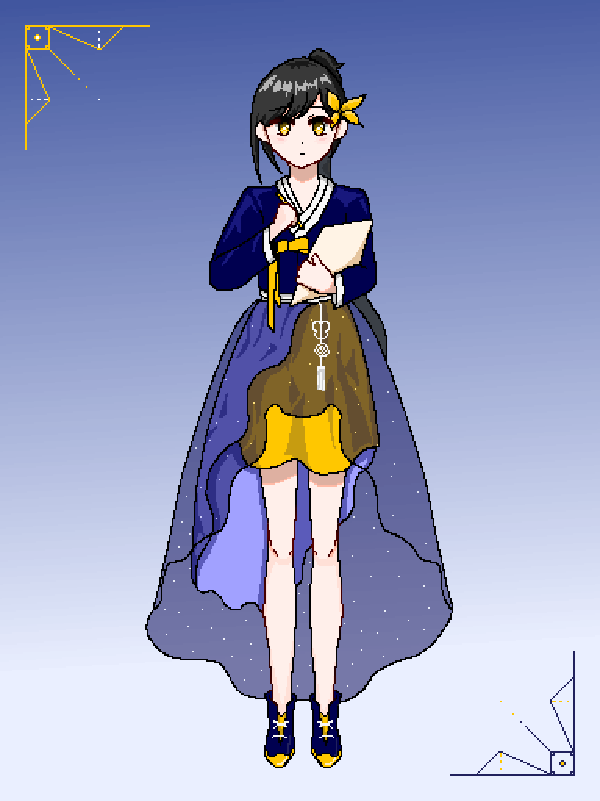

// about
탐사자 채록 (採錄)
목적지는 없습니다. 다만 기록합니다.
오직 음악으로만 기록합니다.
Field Notes : Cosmos는
채록이 만들어나가는 기록입니다.
// tracklist
+ BONUS · Clearing
// 탐사자

// 기록
// 후원
채록의 기록이 계속될 수 있도록.
텀블벅 크라우드펀딩 준비 중입니다.
오픈 시 이곳에서 안내드립니다.